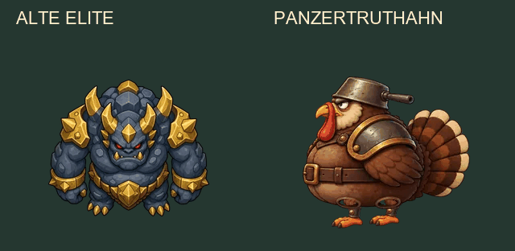
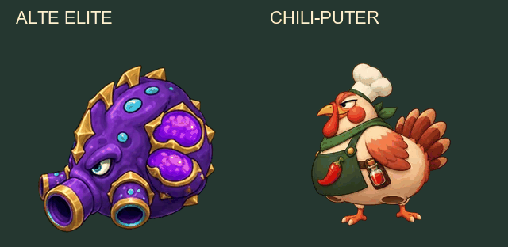
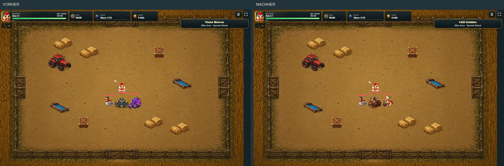
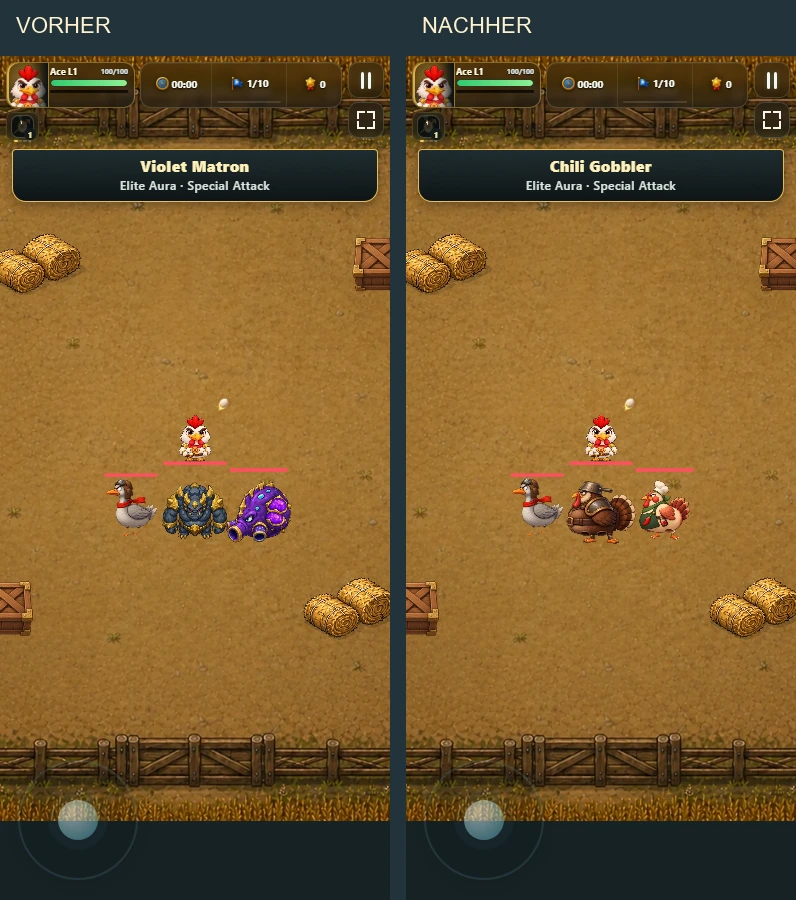

Zwei neue Elite-Gegner
Links die erhaltene alte Version, rechts die neue Figur. Die isolierte Animation zeigt Lauf und Angriff getrennt. Das automatische Angriffsschema ist eine Vorschau; im Spiel lösen die vorhandenen Telegraphe die Posen aus.
Panzertruthahn / Panzer Turkey
Breite Rüstung, Kochtopfhelm und kurzer Truthahnfächer. Schwerer Schritt, tiefes Ausholen, Stampfer und sichtbare Erholung. Rüstungsaura und bisheriger Flächenschaden bleiben erhalten.
Lauf als GIF

Chili-Puter / Chili Gobbler
Helle, runde Figur mit Kochmütze und Chili-Schürze. Hält zum Luft holen an, pufft sich auf und federt beim Salvenspucken zurück. Fünf Geschosse und Regenerationsaura bleiben erhalten.
Lauf als GIF

Im Spiel: gleiche Bühne und Größe
Release-Build vor/nach, gleiche Map und Positionen. Die neue Turbo-Gans bleibt als Vergleich dabei. Keine Vergrößerung der Trefferflächen.
Desktop

Mobil hochkant

Bewertung: Die neuen Silhouetten und Requisiten passen zum Humor und unterscheiden die Rollen deutlicher. Die Posen sind bewusst zurückhaltend; Warnringe und Geschosse tragen weiter die Gefahreninformation. Neue Champion-Grafiken oder zusätzliche Elite-Mechaniken sind in diesem Auftrag nicht enthalten. Originale bleiben erhalten. Rückweg: VITE_PORTAL_ELITE_ART=classic beim Start/Build.